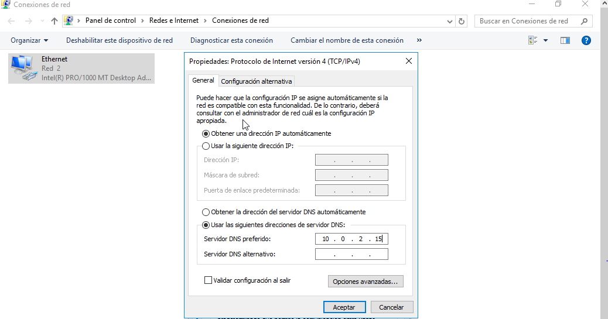
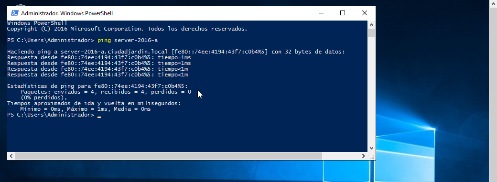
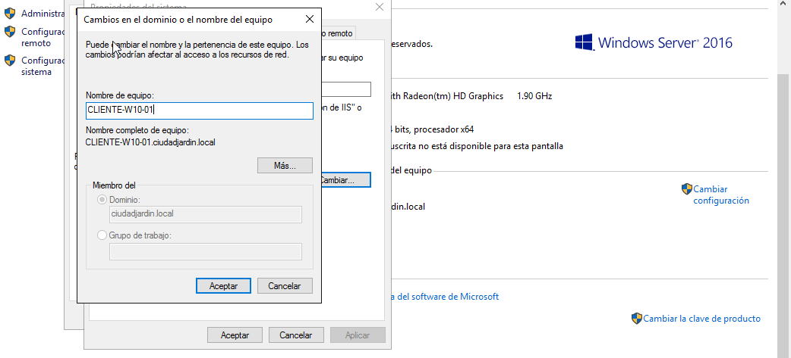
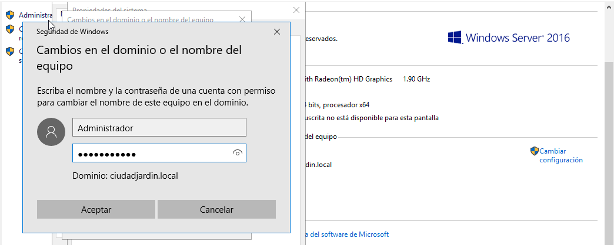

Incorporar equipos al Dominio
Para comenzar a utilizar los recursos que ofrece un dominio, es necesario añadir a dicho dominio los ordenadores que puedan
actuar como clientes.
El proceso se realiza con tres pasos básicos: Establecer las características de red, para que coincidan con las necesidades
del dominio, ajustar el nombre del equipo y unirlo al dominio.
Configurar la red en el equipo cliente
En este paso, podemos dejar habilitada la asignación automática de IP, pero debemos asegurarnos de que el Servidor DNS preferido hace referencia a la dirección IP del controlador del dominio.
Para comprobar que el proceso, aunque sencillo, se ha realizado correctamente, deberemos de hacer un ping al servidor.
Si utilizamos el nombre del servidor en lugar de su dirección IP, comprobaremos que el equipo se encuentra en la red del servidor, que la configuración DNS del cliente es correcta y que el servidor DNS del controlador de dominio está funcionando adecuadamente.
Cambiar el nombre del equipo y unirlo al dominio
Es necesario ajustar el nombre del equipo cliente, para que coincida con un nombre de equipo definido en el dominio. Al indicar el nombre del dominio, el sistema procederá a establecer el vínculo.
Para ello haremos click derecho sobre el botón de inicio y seleccionaremos la opción de sistema. A continuación, en la ventana emergente debemos de escoger la opción que pone cambiar configuración y cambiar en la ventana que aparece.
En el campo Nombre de equipo, debemos asegurar de escribir el nombre de la cuenta del dominio. Además, en el área Miembro del, elegiremos la opción Dominio y debajo escribiremos el nombre del dominio al que queremos unir el equipo.
Windows 10 busca en la red el dominio especificado y si lo encuentra deberemos escribir un nombre de usuario y una contraseña, perteneciente al dominio, que tenga privilegios suficientes para unir el equipo cliente.
Finalmente deberemos de reiniciar el sistema tras guardar todos los datos y cerrar los programas abiertos.